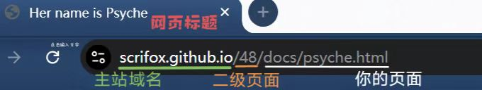
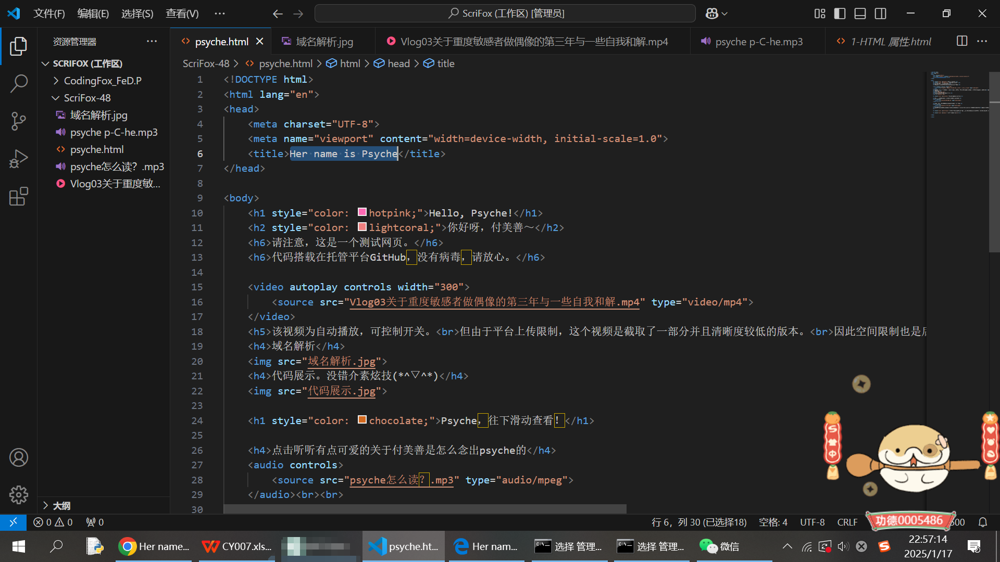

Hello, Psyche!
你好呀，付美善～
“这个妹妹我曾见过的”
请注意，这是一个测试网页，非正式开发成果。
开发者甚至还没正式开始学习JS语言的应用。
页面中所有文字及排版均为功能测试，没有加入太多设计元素。
本站点代码搭载在托管平台GitHub，没有病毒，请放心。
该视频为自动播放，可控制开关。
但由于平台上传限制，这个视频是截取了一部分并且清晰度较低的版本。
因此空间限制也是后续开发中的难题之一Ծ‸Ծ
这是一则修改：因为GitHub读取素材出现问题，本应出现在此处的（你的Volg3）视频
无法在网页中加载，临时更换为自动播放《蝴蝶》。
ps.该问题将（但有点没自信）在后续版本中解决。
域名解析

代码展示。没错介素小小炫技，因为我只学了三天哟吼(*^▽^*)

Psyche，往下滑动查看！
点击听听有点可爱的关于付美善是怎么念出psyche的
查到一则关于这个词如何发音的教学，但不一定标准哦
英语词根psych源自希腊语的p-C-he（希腊文不会打^_^），p-C-he是希腊神话中心灵之神的名字。
因此p-C-he表示“心灵”，转写成拉丁字母就是psych。
好啦！暂时展示到这里嗷～因为也只是非常初级的展示，我刚学一会儿，还谈不上多少设计嘿嘿～
ps.将链接发给其他人，同样可以查看。
但作者糕剑狸表示前半辈子写的代码都没这几天多∠( ᐛ 」∠)＿
就这完成度也太羞耻太不好意思惹！>_<
再会～小善善(♡>o<)/♥